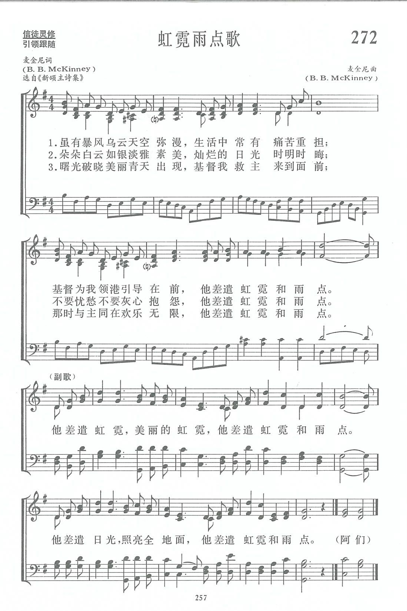

|
|
|
|
|
第272首《虹霓雨點歌》 |
|
https://www.zanmeishige.com/tab/13945.html?songbook=1&index=272
 |
|
|
|
|

https://www.youtube.com/watch?v=0_WHpe2ZNPI
| Text: | The Rainbow With the Rain |
| Author: | B. B. McK. |
| Tune: | [He sends the rainbow, a lovely rainbow] |
| Composer: | B. B. McKinney |
| Short Name: | B. B. McKinney |
| Full Name: | McKinney, B. B., 1886-1952 |
| Birth Year: | 1886 |
| Death Year: | 1952 |
Pseudonyms--
Martha Annis (his mother’s maiden name was Martha Annis Heflin)
Otto Nellen
Gene Routh (his wife’s maiden name was Leila Irene Routh)

-----
Son of James Calvin McKinney and Martha Annis Heflin McKinney, B . B.
attended Mount Lebanon Academy, Louisiana; Louisiana College, Pineville,
Louisiana; the Southwestern Baptist Seminary in Fort Worth, Texas; the
Siegel-Myers Correspondence School of Music, Chicago, Illinois (BM.1922);
and the Bush Conservatory of Music, Chicago. Oklahoma Baptist University
awarded him an honorary MusD degree in 1942.
McKinney served as music editor at the Robert H. Coleman company in Dallas, Texas (1918–35). In 1919, after several months in the army, McKinney returned to Fort Worth, where Isham E. Reynolds asked him to join the faculty of the School of Sacred Music at Southwestern Baptist Theological Seminary. He taught at the seminary until 1932, then pastored in at the Travis Avenue Baptist Church in Fort Worth (1931–35). In 1935, McKinney became music editor for the Baptist Sunday School Board in Nashville, Tennessee.
McKinney wrote words and
music for about 150 songs, and music for 115 more.
--© Cyber Hymnal™ (www.hymntime.com/tch)
第272首 虹霓雨点歌 HE SENDS THE RAINBOW AND THE RAIN _B．B.Mckinney
经文：“神说：‘我把虹放在云彩中，这就可作我与地立约的记号了’”(创9：13)。
这是一首非常美丽而又十分有意义的诗歌，它教导我们无论是在“暴风乌云天空弥漫”，或“朵朵白云如银淡雅素美”、“曙光破晓美丽青天出现”的时候，都不要忘记主耶稣的同在与安慰。它一再重复“他差遣虹霓和雨点”，以提醒信徒：“基督为我领港引导在前”；“不要忧愁不要灰心抱怨”，而要想到“与主同在欢乐无限”的美好经历。
词和曲都是美国南浸信会牧师麦金尼所作。麦金尼(B．B.Mckinney，1886—1952)是2O世纪最重要的南浸会的圣诗作者。他于西南浸会神学院毕业后，先在函授学校学音乐，以后又去芝加哥布式音乐学院专攻音乐，毕业后返回母校西南浸会神学院音乐学院任教，同时从事音乐编辑和出版工作，他自己写诗也谱曲。经济不景气时期，他辞去教职，出任浸会堂牧师，历任浸会主日学部音乐主编。
他自己写过一百五十首福音诗歌的词和曲，还为其他作者谱曲一百十五首。浸会《颂主新歌》内有他写的诗十一首和他所谱的曲十八首。
https://www.xueshengshi.com/?p=9963
祂差遣虹霓和雨點 He Sends the Rainbow with the Rain
雖有暴風烏雲天空瀰漫，生活常有痛苦和重擔；
基督為我領港引導在前，祂差遣虹霓和雨點…
朵朵白雲如銀一般素美，燦爛的日光時時消晦；
不要憂愁不要叫苦怨天，祂差遣虹霓和雨點…
曙光破曉美麗青天出現，基督救主要為我來前；
令我脫離世界愁苦萬般，祂差遣虹霓和雨點…
（副歌）
祂差遣虹霓，美麗的虹霓，
祂差遣虹霓和雨點。
祂差遣日光，照亮全地面，
祂差遣虹霓和雨點。
 (請點耳機收聽)
(請點耳機收聽)
讀了今日的經文和靈修，我耳際縈迴了數十年前的這首老歌。 我翻遍了十多本聖詩都找不到它，想放棄，但又揮之不去。 最後我終於在新頌主詩集中找到了它，喜悅如獲瑰寶。
我不喜歡雨天，但卻喜歡雨後的虹霓和清新的空氣。 在人生的道路上，我們也不時需要及時的恩雨，來洗滌塵心；和應許的彩虹，來企盼未來的祝福。
這是一首非常美麗又十分有意義的詩歌，它教導我們無論在 「暴風烏雲天空瀰漫」或「朵朵白雲如銀一般素淨」、「曙光破曉美麗青天出現」的時候，都不要忘記主耶穌的同在與慰藉。
基督徒生命中雖有雨點，也有虹霓，有主領港引導在前，不要憂愁抱怨，唯有在雨點中，才能體會有主同在的美好經歷。
這首歌是麥堅尼（B.B. Mckinney, 1886-1952, 見二月五日）所作。
他是廿世紀美南浸信會最重要的聖詩作家之一。
有一首詩歌「神是愛」，我不知道它的作者是誰？這歌的旋律活潑輕快，許多人都愛唱，其歌詞如下：
神是愛，打開你的心高聲唱，神是愛，把祂告訴各地方。
祂創造天空和那深海洋，祂創造飛鳥和那蜜蜂忙。
祂造一切為你和我，因神是愛。
神是愛，打開你的心盡宣揚，神是愛，祂願世人知道祂，
祂創造玫瑰和那蔓藤長，祂創造樹木和那星閃亮。
祂造一切為你和我，因神是愛。
神是愛，天地和萬物都宣揚，神是愛，祂願世人分享祂。
祂為失喪人預備生命路，用祂大能的手來拯救他。
祂造一切為你和我，因神是愛。
（副歌）
神是愛，空氣中我能體會，恩典中我能體會，
隨時我都能體會，從最深的海洋到那最高的山，
萬物都告訴我，神是愛。
中英文聖詩集參考
英文歌名 He
Sends the Rainbow with the Rain
讚美 322
讚美詩(新編) 272
校園詩歌I 101
http://www.hymncompanions.org/Jun/15/stream.php